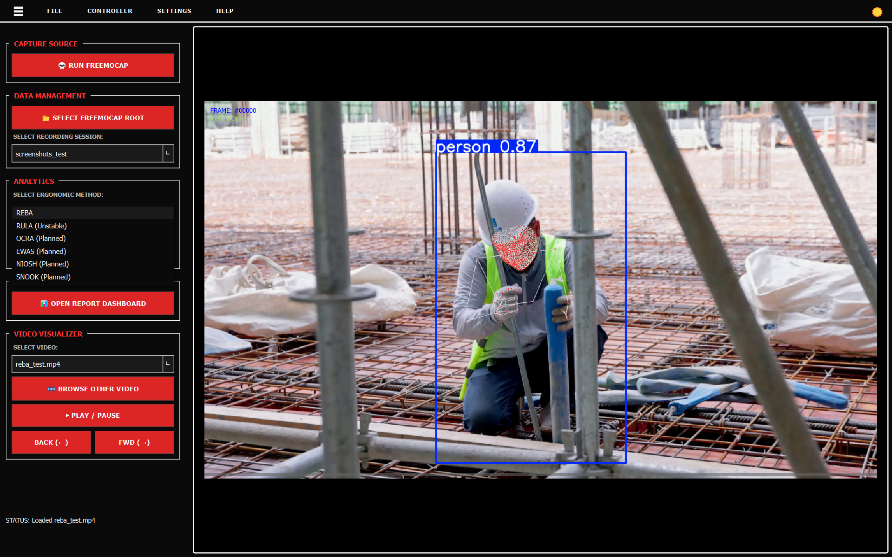
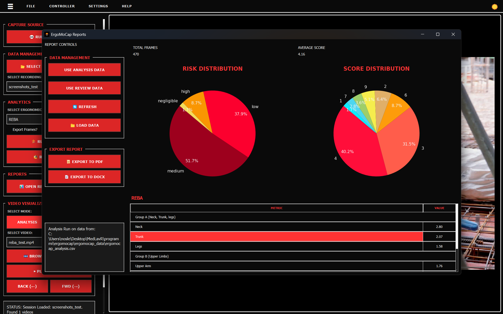
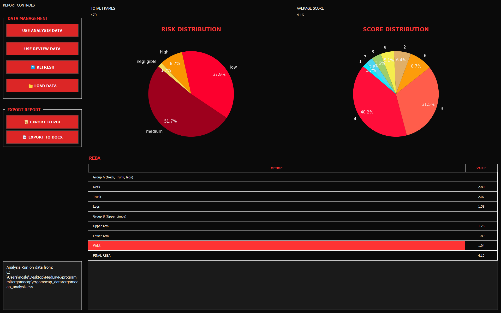

A free, open-source desktop app built with Python. It takes the tracking data from your FreeMoCap videos and automatically turns it into clear, easy-to-read ergonomic risk reports.



ErgoMoCap is a free, open-source app that runs completely on your own computer. It connects standard video motion tracking with official workplace ergonomics checks. It gives students and researchers a free, and reliable way to measure physical workplace safety risks without needing to buy expensive, corporate hardware and software. At the time of pre-alpha versions v0.0.X, the tool is not reliable and prone to errors.
We built this tool to solve a common problem in school and research settings: making it easy and completely free to get reliable ergonomics safety scores (like REBA, RULA, NIOSH, and SNOOK) directly from simple video files.
We didn't want to reinvent the wheel. ErgoMoCap is built directly on top of the amazing work done by the FreeMoCap project. We share their values, use their open-source setup, and designed our app to expand on their excellent video tracking tools. Huge thanks and credit go to the FreeMoCap community for making this possible!
📢 CITATION FROM THE FREEMOCAP PHILOSOPHY:
"Knowledge is free. Labor is expensive. Anything that can be infinitely and losslessly duplicated, code, documentation, videos, should be available to everyone, for free."
Believing fully in this idea, ErgoMoCap has absolutely no paid extras, no paywalls, and no premium versions. Under our AGPL-3.0 License, you are completely free to use, change, or build upon this software, as long as you share your updates under the exact same open terms.
The app works like a simple assembly line: it takes the physical movement data captured from your videos and calculates standard ergonomic safety scores.
The app imports the 3D body tracking data created by FreeMoCap. It uses a translation file
(the freemocap_adapter) to read the positions of 22 key body joints. Right now,
in these early pre-alpha versions (v0.0.X), the app uses the calculated joint angles to run
its checks.
The math engine instantly reads these joint positions frame-by-frame and checks them against standard ergonomic safety limits to find any risky movements. Note: Speed optimizations are planned for version v0.1.0, but the current engine is already fast enough for standard use.
Right now, ErgoMoCap acts as an easy-to-use visual screen that controls FreeMoCap behind the scenes to gather your data. However, this is just the first step in a larger project.
Our ultimate goal is to combine the best parts of both systems. We plan to build the video tracking features right into ErgoMoCap itself. This will eventually give ergonomics researchers a single, standalone desktop app that handles everything from video recording to final safety reports with no extra setup required.
CURRENT PHASE: PRE-ALPHA (V0.0.X)
The main visual controls and FreeMoCap data links are working. However, the RULA tracking scores are
still unstable. Right now, the app should only be used for testing and academic experiments, not
official certifications.
DEVELOPER NOTE: Our code updates strictly require successful documentation builds and at least 90% test coverage across our math tools (including SNOOK and EWAS) before changes can be saved. If any automated pre-commit check fails, the commit is blocked.
Follow these steps to set up ErgoMoCap on your computer.
👉 Follow A. SIMPLE INSTALL if
you don't know how to code or use dev tools.
👉 Follow B. DEV INSTALL if you
are familiar with dev tools.
Follow these quick steps to get the application up and running without configuration:
ErgoMoCap.exe to start the application.Inside the extracted folder, you will find an
_internal directory. Here is what you need to know about it:
_internal/ergomocap_data/. This directory will contain your
annotated videos, pure MoCap/MediaPipe data, and post-processed files.freemocap_data folder right here inside the _internal directory.
_internal folder contains a large number of
system packages and core files. We strongly suggest not touching or modifying
anything else inside this directory unless you know exactly what you are doing.
Before you start, make sure you have these installed:
https://github.com/medlav/ergomocap.gitergomocap folder.
cd path/to/ergomocap/python -m venv venvvenv\Scripts\activatesource venv/bin/activatepip install -r requirements.txtYou must be in the Ergomocap folder to launch the app execution thread.
cd path/to/ergomocap/Then run the main.py file from terminal window:
python main.py💡 The dark-themed main window should appear on your screen immediately.
If you just want to see how it works without recording anything completely new:
session_001).Review these quick pipeline patches if execution engine flags errors:
annotated_videos
exactly configured inside your session data folder
freemocap_data/recording_sessions/. Select the correct freemocap_data/
folder using 📂 SELECT FREEMOCAP ROOT.
.csv or .npy
dataset matrices created by FreeMoCap to work. If they are missing, execute the FreeMoCap
"Post-Processing" step first. For more info read the FreeMoCap Official Documentation.
You must have already completed a FreeMoCap recording session with valid 3D trajectory data. If you need to record new data, click the 💀 RUN FREEMOCAP button in the main interface. New to FreeMoCap? Read the Official Documentation.
Load your FreeMoCap recording session into ErgoMoCap. The application expects data organized in the
standard freemocap_data/record_sessions directory structure.
freemocap_data folder.
Files
involved: gui/core/session_manager.py,
calculators/adapters/freemocap_adapter.py
Select which ergonomic assessment protocol to apply. REBA (Rapid Entire Body Assessment) evaluates full-body posture; RULA (Rapid Upper Limb Assessment) focuses on neck, trunk, and upper limbs.
Files
involved: calculators/reba_calculator/REBA_calculator.py,
gui/workers/analysis_worker.py, gui/core/analysis_engine.py
Validate that the computed skeleton accurately tracks the subject throughout the recording. Visual verification ensures your ergonomic scores reflect real movement.

Files
involved: gui/widgets/video_canvas.py,
calculators/adapters/freemocap_adapter.py
Review your ergonomic risk assessment and generate shareable documentation for compliance records or team review.
Files
involved: gui/views/report_view.py, gui/templates/REBA_report.j2,
exports/pdf_generator.py
For advanced recording techniques, calibration workflows, and MoCap best practices, consult the FreeMoCap Official Documentation.
Now that the software engine is running, you need to learn how to navigate the interface system layout and interpret the compiled econometric data arrays.